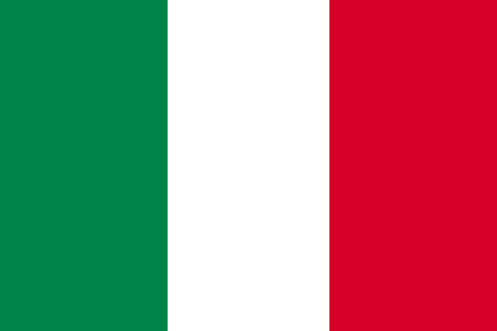

<!DOCTYPE html>
<html lang="en"></html>
<html>
<head>
    <meta charset="UTF-8">
    <meta http-equiv="X-UA-Compatible" content="IE=edge">
    <meta name="viewport" content="width=device-width, initial-scale=1.0">
    <title>Document</title>
    <link rel="stylesheet" href="test6.css">
    <link rel="stylesheet" href="testmobile6.css">
</head>
<body>
    <div class="data-base">
        <div class="header">G7各国データ</div>
        <h2 >国を選択してください</h2>
       
        <select>
            <option value="japan">日本</option>
            <option value="america">アメリカ</option>
            <option value="italy">イタリア</option>
            <option value="UK">イギリス</option>
            <option value="germany">ドイツ</option>
            <option value="france">フランス</option>
            <option value="canada">カナダ</option>
        </select>
    </div>
    <div class="list-box">
        <div class="list" id="image">
          
          </div> 
          <div class="list-caption">
            <p id="text-contents">・人口：1億2512万人(2021/10/1)<br>・国土面積:約37万8,000平方キロメートル<br>・公用語:日本語<br>・GDP:$5,045.101(Billion)	<br>・一人あたりGDP:40,088.603	<br>・現在の首相・大統領:岸田文雄(101代)<br>・政治体制:議会制民主主義<br>・首都:東京(実質)<br>※出典<br>外務省ホームページ<br>IMFデータベース<br></p>
        </div> 
</div>
</body>
</html>
<script>
 const choice=document.querySelector("select");
 const text=document.getElementById("text-contents");
 choice.addEventListener("change",selectData);
    function selectData(){
          const option=choice.value;
         if(option==="america"){
           
            document.getElementById("image").innerHTML=""
            text.innerHTML="・人口：3億3,006万人(2021年1月)<br>・国土面積:962.8万平方キロメートル<br>・公用語:英語（法律上の定めはない）<br>・GDP:$20,893.750	(Billion)(2020)	<br>・一人あたりGDP:$63,358.489	(2020)<br>・現在の首相・大統領:ジョセフ・R・バイデン(101代)<br>・政治体制:大統領制<br>・首都:ワシントンD.C.<br>※出典<br>外務省ホームページ<br>IMFデータベース<br>"
        }else if(option==="italy"){
            document.getElementById("image").innerHTML=""
            text.innerHTML="・人口：6,046万2千人（2020）<br>・国土面積:30.1万平方キロメートル<br>・公用語:イタリア語<br>・GDP:$1,884.935(Billion)(2020)	<br>・一人あたりGDP:$31,604.433	(2020)<br>・現在の首相・大統領:セルジョ・マッタレッラ<br>・政治体制:共和制<br>・首都:ローマ<br>※出典<br>外務省ホームページ<br>IMFデータベース<br>"
    }else if(option==="UK"){
        document.getElementById("image").innerHTML=""
        text.innerHTML="・人口：6,708万人（2020）<br>・国土面積:24.3万平方キロメートル<br>・公用語:英語<br>・GDP:$2,709.678	(Billion)(2020)	<br>・一人あたりGDP:$40,394.127	(2020)<br>・現在の首相・大統領:ボリス・ジョンソン<br>・政治体制:立憲君主制<br>・首都:ロンドン<br>※出典<br>外務省ホームページ<br>IMFデータベース<br>"
    }else if(option==="germany"){
        document.getElementById("image").innerHTML=""
        text.innerHTML="・人口：約8,319万人（2020年9月）<br>・国土面積:35.7万平方キロメートル<br>・公用語:ドイツ語<br>・GDP:$3,843.335(Billion)(2020)<br>・一人あたりGDP:$46,215.596	(2020)<br>・現在の首相・大統領:フランク＝ヴァルター・シュタインマイヤー大統領<br>・政治体制:連邦共和制<br>・首都:ベルリン<br>※出典<br>外務省ホームページ<br>IMFデータベース<br>"
    }else if(option==="france"){
        document.getElementById("image").innerHTML=""
        text.innerHTML="・人口：約6,706万人（2020/1/1）<br>・国土面積:54万4,000平方キロメートル<br>・公用語:フランス語<br>・GDP:$2,624.416(Billion)(2020)<br>・一人あたりGDP:$	40,298.851(2020)<br>・現在の首相・大統領:エマニュエル・マクロン大統領<br>・政治体制:共和制<br>・首都:パリ<br>※出典<br>外務省ホームページ<br>IMFデータベース<br>"
    }else if(option==="canada"){
        document.getElementById("image").innerHTML=""
        text.innerHTML="・人口：約3,789万人（2020年1月）<br>・国土面積:998.5万平方キロメートル<br>・公用語:英語、フランス語<br>・GDP:$1,644.037(Billion)(2020)<br>・一人あたりGDP:$43,294.795(2020)<br>・現在の首相・大統領:ジャスティン・トルドー<br>・政治体制:立憲君主制<br>・首都:オタワ<br>※出典<br>外務省ホームページ<br>IMFデータベース<br>"
        }else if(option==="japan"){
           
            document.getElementById("image").innerHTML=""
            text.innerHTML="・人口：1億2512万人(2021/10/1)<br>・国土面積:約37万8,000平方キロメートル<br>・公用語:日本語<br>・GDP:$5,045.101(Billion)	<br>・一人あたりGDP:40,088.603	<br>・現在の首相・大統領:岸田文雄(101代)<br>・政治体制:議会制民主主義<br>・首都:東京(実質)<br>※出典<br>外務省ホームページ<br>IMFデータベース<br>"
        }
        };


</script>

